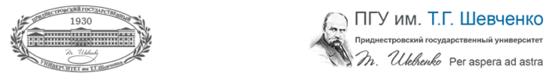

ПРИДНЕСТРОВСКИЙ ГОСУДАРСТВЕННЫЙ УНИВЕРСИТЕТ им. Т. Г. ШЕВЧЕНКО, РЫБНИЦКИЙ ФИЛИАЛ
|  | ||
|---|---|---|
| № п/п | Кафедра | Описание |
| 1. | Декоративно-прикладного искусства | Сегодня кафедре декоративно-прикладного искусства 15 лет. Это лишь начало становления ее творческой и научной деятельности в системе высшего педагогического образования Республики. Но на этом незначительном этапе ее развития видны первые результаты деятельности преподавательского и студенческого коллективов. Именно эти результаты становятся стимулом для дальнейшего развития кафедры, для сохранения и продолжения богатых традиций народного искусства и достижений художников-педагогов. |
| 2. | Иностранных языков | Кафедра иностранных языков Рыбницкого филиала Приднестровского государственного университета им. Т.Г. Шевченко образована в 1994 г. Кафедра осуществляет подготовку специалистов по специальности «Иностранный язык с дополнительной специальностью «Иностранный язык» с присвоением квалификации «Учитель двух иностранных языков», а также по дополнительной к высшему профессиональному образованию специальности «Переводчик в сфере профессиональной коммуникации».Кафедра иностранных языков осуществляет обучение иностранным языкам (английский, немецкий) в рамках требований государственного образовательного стандарта высшего профессионального образования. |
| 3. | Прикладной информатики | Кафедра прикладной информатики образована в 2007 году. Кафедра осуществляет подготовку по специальности «Прикладная информатика в экономике», утвержденной приказом Министерства образования Российской Федерации в 2000 году. По данной специальности выпущено более 80 дипломированных специалистов. На кафедре работают 17 высококвалифицированных специалистов, в том числе 1 профессор, 3 доцента, 4 аспиранта, ведущие специалисты предприятий города. Студенты кафедры проходят учебную и производственную практику в филиале и на предприятиях города. Юноши имеют возможность пройти обучение в Военном институте. |
| 4. | Социально-экономических дисциплин | Объектами профессиональной деятельности менеджера являются различные организации экономической, производственной и социальной сферы, подразделения системы управления государственных предприятий, акционерных обществ и частных фирм. Она распространяется также на научно-производственные объединения, научные, конструкторские и проектные организации, органы государственного управления и социальной инфрастуктуры народного хозяйства.Менеджер должен быть готов к различным видам деятельности, выделяемым в соответствии с его назначением и местом в системе управления: управленческая, организационная, экономическая, планово-финансовая, маркетинговая, информационно-аналитическая, проектно-исследовательская, диагностическая, инновационная, методическая, консультационная, образовательная. |
| 5. | Физики, математики и информатики | Кафедра является одной из выпускающих кафедр Рыбницкого филиала Приднестровского государственного университета им. Т. Г. Шевченко. За время своей работы она выпустила достаточно много специалистов в области преподавания информатики, инженеров-программистов. С самого начала своей деятельности коллектив кафедры ориентировался на спрос потребителей: год от года совершенствовались педагогические технологии, появлялись новые специальности (в частности, «Программное обеспечение вычислительной техники и автоматизированных систем»). |
Контактные данные

(+373)
555-23653

г. Рыбница, ул. Гагарина, 12